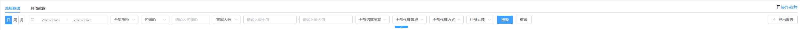
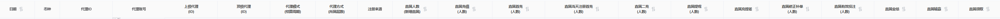
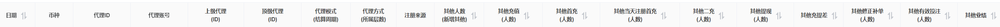

代理数据1（原代理数据查询-旧）
1 、直属数据
该模块主要是查询站点的代理直属数据
特别说明：一级净盈利和一级代理没有其他数据
1.2 搜索部分
搜索部分可以根据选择对应的币种，显示当前币种的总计。
如下图所示：

1.3 部分字段说明
代理账号（ID）：可点击，点击查询该代理账号的下级代理
上级代理（ID）：可点击，点击查询该代理账号的下级代理
直属人数（新增人数）：该代理的直属总人数和当日新增的直属人数
直属充值（人数）：该代理的直属充值总额和当日充值的直属人数
直属首充（人数）：该代理的直属当日首充总额和当日首充的直属人数
直属当天注册首充（人数）：该代理的直属当天注册并在当天首次充值的金额和人数
直属二充（人数）：该代理的直属在首次充值后，再次进行第2次充值的金额和人数
直属提现（人数）：该代理的直属提现总额和提现的人数
直属充提差：该代理的直属总充值金额 - 直属的总提现金额
特别说明：仅限搜索当日数据会去重，若查询跨日数据，展示的人次不去重
特别说明：代理模块的时间查询为时间必填，不在支持删除时间查询
代理数据查询所有的页面增加顶级代理ID和代理层数展示
如下图所示：

2 、其他数据
该模块主要是查询站点中的代理的全部其他数据总计
特别说明：一级净盈利和一级代理没有其他数据
1.2 搜索部分
搜索部分可以根据选择对应的币种，显示当前币种的总计。
如下图所示：
1.3 部分字段说明
代理账号（ID）：可点击，点击查询该代理账号的下级代理
上级代理（ID）：可点击，点击查询该代理账号的下级代理
其他人数（新增人数）：该代理的其他总人数和当日新增的其他人数
其他充值（人数）：该代理的其他充值总额和当日充值的其他人数
其他首充（人数）：该代理的其他当日首充总额和当日首充的直属人数
其他当天注册且首充（人数）：该代理的其他当天注册并在当天首次充值的金额和人数
其他二充（人数）：该代理的其他在首次充值后，再次进行第2次充值的金额和人数
其他提现（人数）：该代理的其他提现总额和提现的人数
其他充提差：该代理的其他总充值金额 - 其他的总提现金额
特别说明：仅限搜索当日数据会去重，若查询跨日数据，展示的人次不去重
特别说明：代理模块的时间查询为时间必填，不在支持删除时间查询
代理数据查询所有的页面增加顶级代理ID和代理层数展示
如下图所示：
